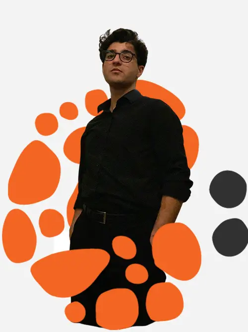

About Me
My name is Sam Daramroei. I am 24 (25 this December) and I live in Turkey currently. I majored in Software Development and have my own start-up (Cheerio Studio) which in I provide Graphics & Web Design solution to companies or other start-up. I am also Head of IT in another start-up which will start its activities soon. I have the pleasure of serving as a YAAA (Young Adult Area Advisory) in Central Europe Mission, representing Turkey for the Church of Jesus Christ Latter-Day Saints. Also, if you know about "Rising Generation", I also serve in that committee.
Turkey

"Turkey, officially the Republic of Türkiye, is a country mainly located in Anatolia in West Asia, with a smaller part called East Thrace in Southeast Europe. Officially a secular state, Turkey has a Muslim-majority population. Ankara is Turkey's capital and second-largest city, while Istanbul is its largest city and economic and financial center. Other major cities include İzmir, Bursa, and Antalya." (Turkey Wiki)